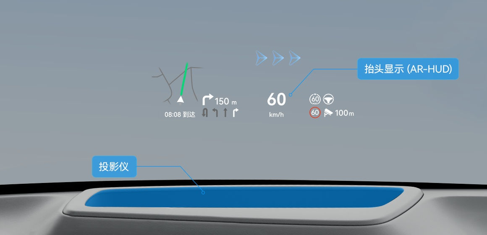
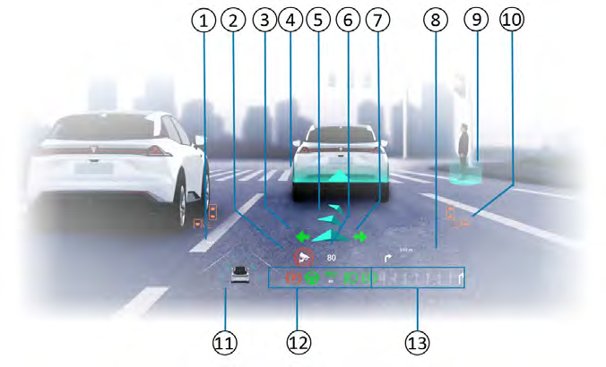
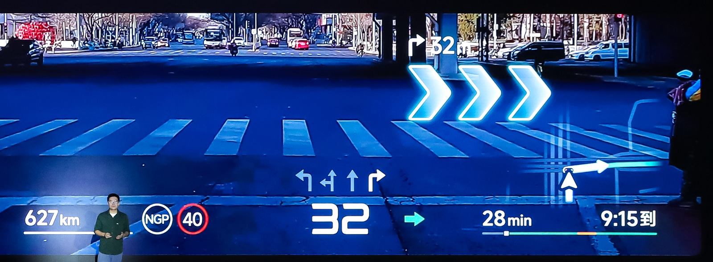
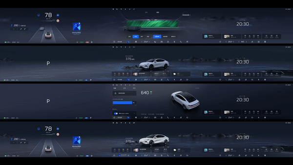
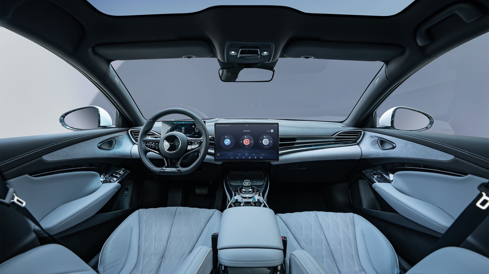
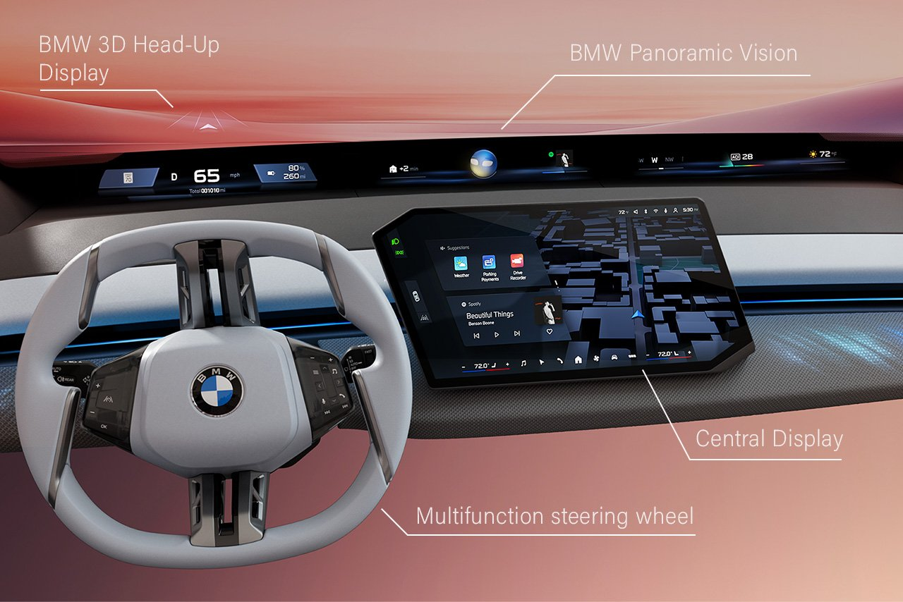

问界 M8

- 车速锚点
- 车速 60 在固定信息群中央偏右，下方标单位
- 导航
- 小地图和 150 m 转向提示在车速左边，蓝色箭头在上方
- 辅助驾驶与告警
- 限速、道路提示集中在车速右侧，手册另列交通与摄像头图标
与 M9 样例并看，可观察地图、车速与右侧提示如何横排。M8 的手册另列 AR 增强、转向灯激活影像和小地图开关。One Glass 下仍须分别建三个实体屏画板。
对照 18 款量产车型的手册图、官方技术图和媒体实车画面，观察关键信息放在哪里，以及驾驶任务变化时如何调配显示空间。
选择有清楚图源的代表性量产车型，中国品牌 10 款，海外品牌 8 款。中国品牌样本包含出口版手册和产品图，按所列市场与配置阅读。
图像保留原内容。小鹏图为发布会画面局部，丰田为手册页局部，大众图从官方 PDF 提取，凯迪拉克为媒体试驾视频帧。
默认并看问界 M8 与深蓝 S07，比较独立仪表与由 HUD 承担主要行车信息的布局。可换成银河 E8 与海豹 SEAL 对照贯穿屏和独立可旋转屏。

与 M9 样例并看，可观察地图、车速与右侧提示如何横排。M8 的手册另列 AR 增强、转向灯激活影像和小地图开关。One Glass 下仍须分别建三个实体屏画板。

驾驶信息主要由 HUD 承担。做同类布局时，可优先验证 AR 提示与 HUD 底部持续读数是否互相遮挡。图示功能与国内配置以各市场手册为准。
逐车记录研究范围内的前挡显示、仪表、中控、副驾及相关后排屏。宽高比取横向 ÷ 纵向。尺寸随市场、年款和配置变化，以下以各行链接为准。
64 条参数
下载屏幕参数 CSV ↓| 车型与显示区域 | 宽高比 | 依据宽 × 高 | 公开参数与范围 | 1920 宽画板（px） | 证据来源 |
|---|---|---|---|---|---|
| 问界 M9双焦面 AR-HUD | 未公开 | — | 近、远双焦面近区与远区的宽高分别待确认。 | — | 未公开查看依据 ↗ |
| 问界 M9主驾仪表 | 未公开 | — | 12.3 英寸 | — | 未公开查看依据 ↗ |
| 问界 M9中控 | 未公开 | — | 17.2 英寸 | — | 未公开查看依据 ↗ |
| 问界 M9副驾 | 未公开 | — | 17.2 英寸 | — | 未公开查看依据 ↗ |
| 理想 i8HUD 手册示意区 | 2.67:1 | 800 × 300 图像 px | 黑底布局框原图 800 × 396，黑底 x=0、y=96、宽 800、高 300。 | — | 图示估算查看依据 ↗ |
| 理想 i8安全驾驶交互屏 | 未公开 | — | 方向盘交互屏 | — | 未公开查看依据 ↗ |
| 理想 i8中控 | 未公开 | — | 座舱触控屏 | — | 未公开查看依据 ↗ |
| 理想 i8副驾 | 未公开 | — | 座舱触控屏 | — | 未公开查看依据 ↗ |
| 理想 i8后舱娱乐 | 未公开 | — | 产品页列 21.4 英寸，随配置 | — | 未公开查看依据 ↗ |
| 小米 SU7HUD | 未公开 | — | 56 英寸初代配置表，依车型。 | — | 未公开查看依据 ↗ |
| 小米 SU7翻转仪表 | 未公开 | — | 7.1 英寸 | — | 未公开查看依据 ↗ |
| 小米 SU7中控 | 未公开 | — | 16.1 英寸 / 3K | — | 未公开查看依据 ↗ |
| 小鹏 G7AR-HUD | 未公开 | — | 87 英寸等效 / 10 m | — | 未公开查看依据 ↗ |
| 小鹏 G7中控 | 未公开 | — | 15.6 英寸 | — | 未公开查看依据 ↗ |
| 小鹏 G7后排娱乐 | 未公开 | — | 8 英寸 | — | 未公开查看依据 ↗ |
| 极氪 007AR-HUD | 未公开 | — | 35.5 英寸 | — | 未公开查看依据 ↗ |
| 极氪 007中控 | 未公开 | — | 15.05 英寸 / 2.5K OLED | — | 未公开查看依据 ↗ |
| 小米 YU7天际屏 | 未公开 | — | 全宽 1.1 m风挡下缘投影。各段显示高度和有效边界待确认。 | — | 未公开查看依据 ↗ |
| 小米 YU7中控 | 未公开 | — | 中控触屏 | — | 未公开查看依据 ↗ |
| 小米 YU7后排移动控制屏 | 未公开 | — | 随配置 | — | 未公开查看依据 ↗ |
| 问界 M8AR-HUD | 未公开 | — | 支持 AR 增强 | — | 未公开查看依据 ↗ |
| 问界 M8主驾仪表 | 未公开 | — | 12.3 英寸 | — | 未公开查看依据 ↗ |
| 问界 M8中控 | 未公开 | — | 15.6 英寸 | — | 未公开查看依据 ↗ |
| 问界 M8副驾 | 未公开 | — | 16 英寸 | — | 未公开查看依据 ↗ |
| 问界 M8后舱智能投影 | 未公开 | — | 按配置 | — | 未公开查看依据 ↗ |
| 深蓝 S07AR-HUD | 未公开 | — | 中国配置 55 英寸布局图来自澳版手册。 | — | 未公开查看依据 ↗ |
| 深蓝 S07中控 | 未公开 | — | 中国配置 15.6 英寸 / 2.5K | — | 未公开查看依据 ↗ |
| 吉利银河 E8AR-HUD | 未公开 | — | 25.6 英寸部分原代配置。 | — | 未公开查看依据 ↗ |
| 吉利银河 E845 英寸贯穿屏 | 8.21:1 | 7680 × 936 px | 仪表／中控／副驾同屏2024 年座舱团队公开的实车呈现分辨率。 | 1920 × 234 | 团队披露实车分辨率查看依据 ↗ |
| 吉利银河 E8贯穿屏有效显示区 | 8.19:1 | 1130 × 138 mm | 45 英寸屏的有效显示区国际在线转述官方数据。按实车像素建立数字画板。 | — | 公开有效尺寸查看依据 ↗ |
| 比亚迪海豹 SEALHUD | 未公开 | — | 欧洲左舵手册，随配置 | — | 未公开查看依据 ↗ |
| 比亚迪海豹 SEAL主驾仪表 | 未公开 | — | 欧洲版 10.25 英寸 | — | 未公开查看依据 ↗ |
| 比亚迪海豹 SEAL中控 · 横置 | 1.78:1 | 1920 × 1080 px | 15.6 英寸可旋转屏BYD 巴哈马车型页，适用配置以目标市场为准。 | 1920 × 1080 | 公开分辨率查看依据 ↗ |
| 比亚迪海豹 SEAL中控 · 竖置 | 0.56:1 | 1080 × 1920 px | 同一块旋转屏由公开分辨率交换宽高，供竖置状态建框。 | 1920 × 3413 | 旋转换算查看依据 ↗ |
| 丰田 CamryHUD | 未公开 | — | 10 英寸，依配置 | — | 未公开查看依据 ↗ |
| 丰田 Camry仪表信息屏 | 未公开 | — | 4.2 或 7 英寸，依配置 | — | 未公开查看依据 ↗ |
| 丰田 Camry中控 | 未公开 | — | 7 或 9 英寸，依配置 | — | 未公开查看依据 ↗ |
| 本田 Accord HybridHUD 手册示意区 | 2.67:1 | 786 × 294 图像 px | Touring Hybrid原图 925 × 689，深色底 x≈70、y≈198、宽≈786、高≈294。 | — | 图示估算查看依据 ↗ |
| 本田 Accord Hybrid主驾仪表 | 未公开 | — | 10.2 英寸 | — | 未公开查看依据 ↗ |
| 本田 Accord Hybrid中控 | 未公开 | — | 12.3 英寸 | — | 未公开查看依据 ↗ |
| 起亚 EV9HUD 手册示意区 | 1.82:1 | 238 × 131 图像 px | Head Up Display Information原图 323 × 131，黑底 x≈43、y=0、宽≈238、高=131。 | — | 图示估算查看依据 ↗ |
| 起亚 EV9主驾仪表 | 未公开 | — | 12.3 英寸 | — | 未公开查看依据 ↗ |
| 起亚 EV9空调触控 | 未公开 | — | 5 英寸 | — | 未公开查看依据 ↗ |
| 起亚 EV9中控 | 未公开 | — | 12.3 英寸 | — | 未公开查看依据 ↗ |
| 奔驰 S 级 W223AR-HUD | 2.00:1 | 10° × 5° | 77 英寸等效 / 10 m视场角的横纵比。 | — | 公开视场角查看依据 ↗ |
| 奔驰 S 级 W223主驾仪表 | 2.67:1 | 2400 × 900 px | 12.3 英寸 | 1920 × 720 | 公开分辨率查看依据 ↗ |
| 奔驰 S 级 W223中控 · 基础款 | 0.94:1 | 1624 × 1728 px | 11.9 英寸 | 1920 × 2043 | 公开分辨率查看依据 ↗ |
| 奔驰 S 级 W223中控 · OLED | 1.09:1 | 1888 × 1728 px | 12.8 英寸 | 1920 × 1757 | 公开分辨率查看依据 ↗ |
| 奔驰 S 级 W223后排娱乐 × 2 | 1.78:1 | 1920 × 1080 px | 11.6 英寸，选配 | 1920 × 1080 | 公开分辨率查看依据 ↗ |
| 奔驰 S 级 W223后排平板 | 1.60:1 | 1280 × 800 px | 7 英寸，选配 | 1920 × 1200 | 公开分辨率查看依据 ↗ |
| 奥迪 Q6 e-tronAR-HUD | 未公开 | — | 增强区等效约 88 英寸 | — | 未公开查看依据 ↗ |
| 奥迪 Q6 e-tron主驾仪表 | 未公开 | — | 11.9 英寸 OLED | — | 未公开查看依据 ↗ |
| 奥迪 Q6 e-tron中控 | 未公开 | — | 14.5 英寸 OLED | — | 未公开查看依据 ↗ |
| 奥迪 Q6 e-tron副驾 | 未公开 | — | 10.9 英寸，选配 | — | 未公开查看依据 ↗ |
| 大众 ID.7AR-HUD 近区 | 未公开 | — | 虚像约 3.5 m | — | 未公开查看依据 ↗ |
| 大众 ID.7AR-HUD 远区 | 未公开 | — | 虚像约 10 m | — | 未公开查看依据 ↗ |
| 大众 ID.7ID. Display | 未公开 | — | 紧凑型仪表 | — | 未公开查看依据 ↗ |
| 大众 ID.7中控 | 未公开 | — | 15 英寸 | — | 未公开查看依据 ↗ |
| 宝马 iX33D HUD | 未公开 | — | 独立选配 | — | 未公开查看依据 ↗ |
| 宝马 iX3Panoramic Vision | 未公开 | — | 风挡 A 柱至 A 柱 | — | 未公开查看依据 ↗ |
| 宝马 iX3中控 | 2.32:1 | 3340 × 1440 px | 17.9 英寸异形比例用于像素外接框。设计区域需再套用异形边界。 | 1920 × 828 | 公开分辨率查看依据 ↗ |
| 凯迪拉克 VISTIQAR-HUD | 未公开 | — | Platinum 配置 | — | 未公开查看依据 ↗ |
| 凯迪拉克 VISTIQ驾驶信息与中控 | 未公开 | — | 33 英寸曲面一体屏 | — | 未公开查看依据 ↗ |
| 凯迪拉克 VISTIQ前后排控制屏 | 未公开 | — | 前排与后排各一块 | — | 未公开查看依据 ↗ |
| 车型与版本 | 归类 | 车速锚点 | 导航 | 辅助驾驶与告警 | 图源类型 |
|---|---|---|---|---|---|
| 问界 M92026 款增程版 · 中国手册 | 中国品牌状态区＋道路关联 AR | 画面中部，车速数字居主位 | 左侧地图和转向距离，上方另有绿色箭头示例 | 右侧编排限速和道路提示，图中保留原手册引线 | 官方手册图 |
| 理想 i82026 Max · 中国手册 | 中国品牌固定信息区 HUD | 右侧，车速与挡位集中 | 左侧，方向、距离、路线与预计到达时间 | 中央显示车道、车辆、辅助驾驶和告警 | 官方手册图 |
| 小米 SU7初代发布图 · 2024 | 中国品牌固定信息区 HUD | 画面中央，限速邻近车速 | 路线示意位于上部，转向和距离在右侧 | 左侧有续航，当前图未展示警告态 | 厂商图 · 媒体转载 |
| 小鹏 G72025 首发演示 · 中国 | 中国品牌状态区＋道路关联 AR | 下方信息带中央，左右分布状态与时间 | 右转箭头在道路画面上方，车道动作提示位于下方 | 演示图有 NGP 和限速，发布文列出变道意图与场景告警 | 官方发布会摄影 · 局部 |
| 极氪 007全球车型页 · 展示配置 | 中国品牌状态区＋道路关联 AR | 示图为 P 挡，行驶车速位置待确认 | 画面右侧可见转向与 57 米提示 | 中央可见车辆图形，左侧 P 挡 | 官方车型图 |
| 小米 YU72025 产品页 · 小米天际屏 | 中国品牌风挡下缘信息带 | 主驾侧行车信息区，示图为 P 挡 | 下缘横向区可编排信息卡，配置依模式 | 主驾与乘客可见的横向空间承担不同任务 | 官方车型图 |
| 问界 M8中国增程版 · 2026-09 手册 | 中国品牌状态区＋道路关联 AR | 车速 60 在固定信息群中央偏右，下方标单位 | 小地图和 150 m 转向提示在车速左边，蓝色箭头在上方 | 限速、道路提示集中在车速右侧，手册另列交通与摄像头图标 | 官方手册图 |
| 深蓝 S072025 澳大利亚手册 · S07 系列 | 中国品牌状态区＋道路关联 AR | 车速 80 居近区中间，常用指示灯位于更下方 | 路口引导与车道图形对齐到道路场景，上下分层 | 前车、行人和盲区提示分布在场景内，接管类文字另有独立位置 | 官方手册图 |
| 吉利银河 E8中国首发代 · 2024 座舱团队访谈 | 中国品牌座舱屏对照 · 配备 HUD | 贯穿屏最左侧的仪表区，行驶示例显示 78。HUD 位置待核实 | 访谈图为座舱 HMI 多状态，HUD 导航位置待核实 | 贯穿屏的驾驶信息集中在左区，中部与右部可承担其他任务 | 座舱团队访谈配图 |
| 比亚迪海豹 SEAL海外左舵产品图及手册 · HUD 依配置 | 中国品牌座舱屏对照 · 配备 HUD | 独立仪表保留驾驶信息。欧版手册另列 HUD 车速，具体位置待核实 | 座舱中部为可旋转中控屏，HUD 导航布局待核实 | 欧版左舵手册列出 HUD 限速、ACC、车道偏离和盲区提示 | 官方座舱图 |
| 丰田 Camry2024 · 北美 HUD 配置 | 海外品牌固定信息区 HUD | 右侧，挡位和限速挨近车速 | 左侧共享导航与辅助驾驶区域 | 左侧图示有辅助信息，下方保留额外信息区域 | 官方快速指南 · 局部 |
| 本田 Accord Hybrid2026 · 北美 HUD 配置 | 海外品牌固定信息区 HUD | 右下为当前车速，左下 50 mph 属辅助驾驶读数 | 手册列出逐向指引，示图为车道告警态 | 车道与跟车在左侧，交通标志在右上 | 官方手册图 |
| 起亚 EV92026 · 美国 MV1A 手册 | 海外品牌固定信息区 HUD | 下部中央，巡航设定速度在左侧 | 上部左侧为逐向箭头和距离 | 车道跟随、跟车、盲区和周边车辆占中部与右侧 | 官方手册图 |
| 奔驰 S 级 W2232020 代际发布 · 可选 AR-HUD | 海外品牌状态区＋道路关联 AR | 图中车速位于下方状态群中偏右 | 上方多枚鱼骨箭头叠加在路口方向 | 下方聚合状态，品牌说明包含跟距辅助 | 经销商转载配图 |
| 奥迪 Q6 e-tron2024 Audi 技术图 · 第二代 AR-HUD | 海外品牌状态区＋道路关联 AR | 状态区内，位于上方道路关联图形之下 | 原图标注道路关联的增强区域 | 速度、交通标志、辅助驾驶与导航共享显示系统 | 官方技术示意 |
| 大众 ID.7欧洲发布资料 · ID.7 | 海外品牌状态区＋道路关联 AR | 官方说明车速和限速属于 HUD 近区状态 | 远区负责转向与车道级提示，原图有绿色箭头 | 设备可呈现车道和跟距警告，小仪表还保留基础信息 | 官方技术资料 · 内嵌图 |
| 宝马 iX3新世代 iX3 · 2025 技术发布 | 海外品牌下缘信息带＋独立 HUD | 主驾前方的 Panoramic Vision 条带左侧 | 可选 3D HUD 在条带上方显示导航和辅助驾驶 | 条带中部及右侧可配置，和上方 HUD 协同 | 官方系统示意 · 媒体转载 |
| 凯迪拉克 VISTIQ2026 Platinum · 北美媒体试驾 | 海外品牌状态区＋道路关联 AR | 画面下方可见固定读数，细字难以辨识 | 绿色转向箭头位于状态信息上方，与道路画面关联 | 该帧未充分显示警告态，仪表与 HUD 同框 | 媒体实车画面 · 视频帧 |
18 款车型

在保留中央车速的同时，用两侧容纳常用信息。手册说明可开启 AR 增强，图示仅对应所选版本。

手册明确给出左导航、中辅助、右车速。中央车道场景属于 HUD 内的环境可视化，公开手册未给出它与真实车道的位置注册证据。

信息围绕中心速度锚点排布，下方仪表重复关键速度。本文按可观察布局归类，未用此图判定道路注册能力。

固定读数和场景提示可并存。比较重点是密集路口里贴路提示与信息带是否争抢注意力，发布会大屏无法验证实车效果。

产品页将其称为 AR-HUD。静态原图适合看横向分工，告警位置、实际贴路精度和国内 OTA 版本仍待核对。

利用前风挡下黑区显示，横向空间增加后，主驾关键信息仍需要独立分组。品牌给出的 1.1m 是条带宽度口径。
与 M9 样例并看，可观察地图、车速与右侧提示如何横排。M8 的手册另列 AR 增强、转向灯激活影像和小地图开关。One Glass 下仍须分别建三个实体屏画板。
驾驶信息主要由 HUD 承担。做同类布局时，可优先验证 AR 提示与 HUD 底部持续读数是否互相遮挡。图示功能与国内配置以各市场手册为准。

仪表、中控和副驾内容共享同一块贯穿屏。25.6 英寸 AR-HUD 出现在部分原代配置，图中观察的是贯穿屏布局。

独立仪表与可旋转中控分工。中控框可按横置与竖置做两种原型。欧版手册用于核对 HUD 的功能范围。

同一个固定区域可以按情境切换任务。作为传统 HUD 历史基线保留，图中布局对应 2024 北美版。

两个速度值同时出现时，位置、尺寸、图标必须能区分当前车速与设定速度。

手册用 11 个编号解释信息项。此图能对照模块位置，具体项目受配置、地区和辅助驾驶状态影响。

用短时出现的鱼骨箭头回答「往哪走」。配图为经销商来源，实拍状态及具体配置未核实。

原图有状态区与增强区的引线。厂商表述的最远增强范围描述场景关联，光学虚像距离需另查技术规格。

状态近区和道路远区分工清晰，需关注 HUD 与小仪表出现同一信息时的一致性。

这张图是系统示意，车型应用以 iX3 资料为准。对比 YU7 时应逐层看信息归属和可见对象。

实车帧可观察空间层级和道路背景，曝光、眼点与动态精度仍需受控实测。
银河 E8 在约 8.21:1 的贯穿画板上协调仪表、中控和副驾。问界 M8 的三个实体屏各有任务，HUD 保留行车信息。深蓝 S07 把持续读数和道路提示集中到 HUD。海豹则要让中控内容适配横置和竖置两套布局，同时保持主驾仪表的位置稳定。
吉利银河 E8 · 问界 M8 · 深蓝 S07 · 比亚迪海豹 SEAL
问界 M9、小米 SU7 与起亚 EV9 的样本把速度放在中部。理想 i8、丰田 Camry 和本田 Accord Hybrid 的样本允许车速靠右。车速是否容易找到，取决于位置是否稳定、数字是否突出，以及导航展开后是否挤占原位。
问界 M9 · 理想 i8 · 丰田 Camry · 本田 Accord Hybrid · 起亚 EV9
小鹏公开演示覆盖车道引导、辅助驾驶意图和多场景提示。奔驰展示转弯鱼骨，大众提供车道级导航并保留近区状态，奥迪用原图清楚标示状态区与增强区。共同模式是速度等长期信息集中在固定区域，空间信息按场景呈现。功能丰富度与画面负担需要在同一路口任务下验证。
小鹏 G7 · 奔驰 S 级 W223 · 大众 ID.7 · 奥迪 Q6 e-tron
小米 YU7 通过风挡下缘卡片组织驾驶信息与其他内容。宝马 iX3 将主驾关键读数放在 Panoramic Vision 主驾侧，并把道路导航和部分辅助图形交给可选的上方 3D HUD。评估差距时要看信息是否重复、乘员能看见哪些内容，以及驾驶任务发生变化时信息如何交接。
理想的手册强调左侧导航与中央环境信息并列，丰田让导航与辅助在固定区域承担不同任务，起亚的手册图同时列出周边车辆、车道和跟车信息。可比较的是模块并列与分时显示的策略。配置信息、道路注册稳定性、眩光与识读效率需要统一测试数据才能比较性能差距。
理想 i8 · 丰田 Camry · 起亚 EV9 · 凯迪拉克 VISTIQ